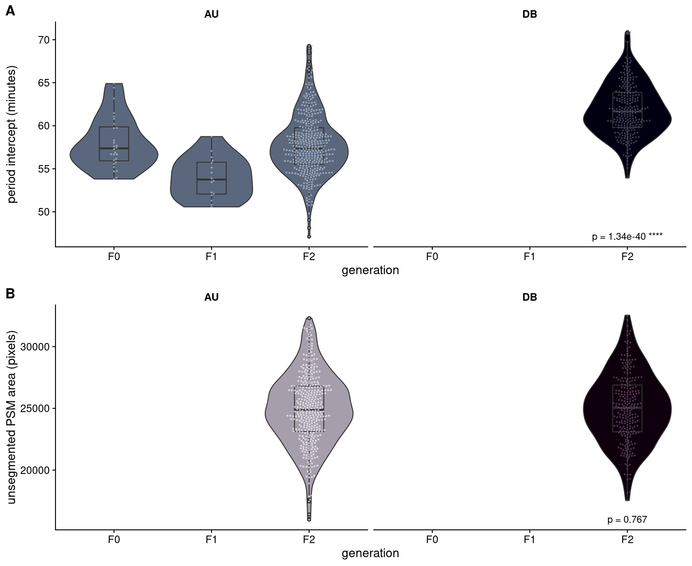
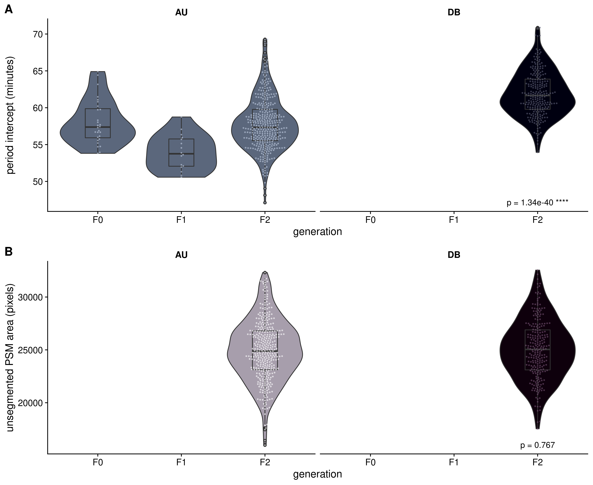
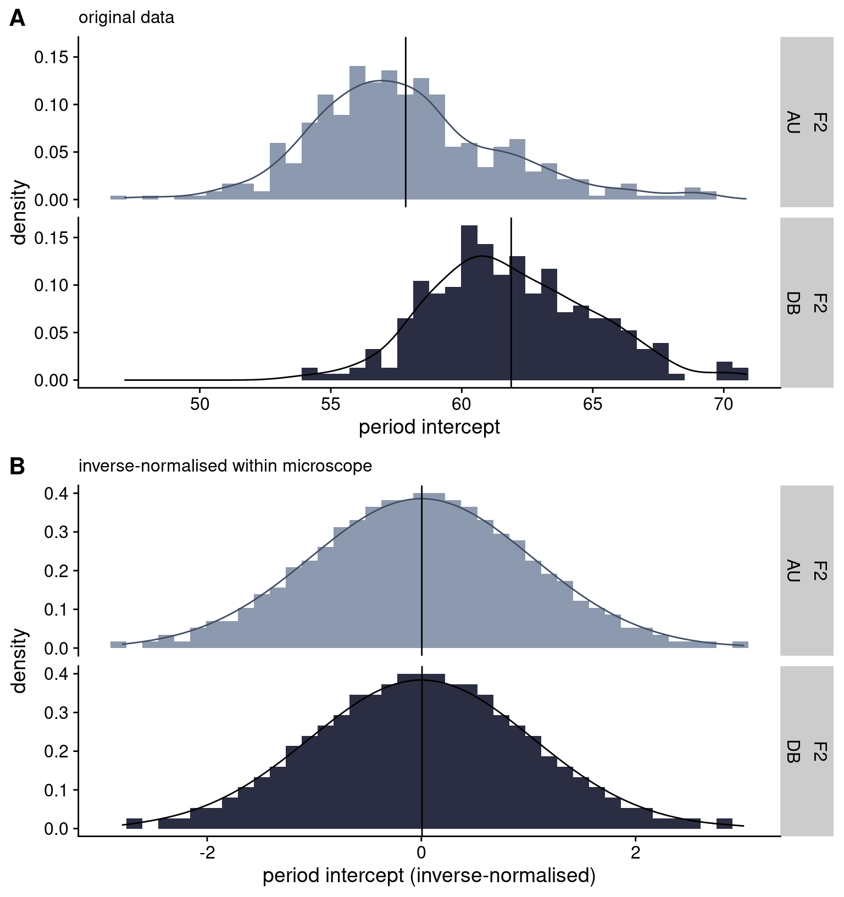

2 Phenotypes of interest
2.1 Somite development period
Figure 2.1 shows the period data generated by pyBOAT for this study, for 100 illustrative F2 samples over 300 minutes. The same data can be represented by boxplots as shown in Figure 2.2. I experimented with using the F2 individuals’ mean period and period intercept as the phenotype of interest. The two measures are highly correlated (\(Pearson's~r =\) 0.84, \(p\) < 2.2 x 10-16), so after displaying the distributions for both measures in Figure 2.4, I proceed to only discuss the analysis of period intercept, as it would appear to potentially be more robust to the changes in slope that can be observed in Figure 2.1.

2.2 Unsegmented presomitic mesoderm area (PSM)
In the proceeding analyses, I also included a second phenotype of interest: the total area of the unsegmented tissue at the stage where 10-11 somites had been formed (PSM area). As the measure is simply based on the total number of pixels covered by the embryo object, I considered it to be potentially more robust than the period measurements, and therefore included it as a type of positive control for the genetic association analyses on the period phenotype. The measurements for PSM area comparing F0 Cab and Kaga strains are shown in Figure 2.3.

2.3 Comparisons between F0, F1 and F2 generations
Figure 2.4 shows the distributions of the period intercept and unsegmented PSM area phenotypes across the F0, F1 and F2 generations. In relation to the period intercept phenotype, only the Cab strain in shown for F0 because only the Cab strain carries the reporter gene, which prohibited the collection of data for Kaga using this pyBOAT method. However, from previous bright field image analyses (which did not require the reporter), my collaborators determined that the Kaga strain has a lower (i.e. faster) period than Cab by around 10 minutes (see Figure @ref(fig:F0-Cab-Kaga-HdrR) in the Introduction). Given these differences, the F1 generation shows the expected intermediate median between the Cab and Kaga F0 strains. I also expected to observe that the F2 generation has a similar median to the F1 generation, but with a wider variance that spans across the extremes of the two F0 parental strains. Instead, I observed that the F2 generation has a median that is slightly slower than the median of the slower-period F0 Cab strain. My collaborators assured me that these observations were unlikely to be caused by technical issues. A possible biological explanation of this is that there are more genetic combinations that slow down the clock rather than speed it up (Sanchez et al. 2022; Schröter and Oates 2010). This phenomenon could be exacerbated by the fact that the Cab and Kaga strains originate from different Japanese medaka populations (southern and northern respectively), which are understood to be at the point of speciation (see Chapter @ref(MIKK-genomes-chap)), so this slower period may be driven by a biological incompatibility between their genomes in cases where they do not have a complete chromosome from each parent (as the F1 generation does). I nevertheless proceeded with the genetic analysis with a view to potentially discovering the reason for this unusual distribution.
Code
IN_F01 = here::here("data/F0_F1_period.xlsx")
IN_F2 = here::here("config/phenos_with_reporter_genoandpheno.csv")
########################
# Plotting parameters
########################
# Intercept
intercept_pal = c("#8D99AE", "#2b2d42")
# Mean
mean_pal = c("#177E89", "#084C61")
# PSM
unsegmented_psm_area_pal = c("#D9D0DE", "#401F3E")
# Get lighter/darker functions
devtools::source_gist("c5015ee666cdf8d9f7e25fa3c8063c99")
########################
# Read in file
########################
df_f2 = readr::read_delim(IN_F2, delim = ";") %>%
# add `GEN` column
dplyr::mutate(GEN = "F2")
# Read in F0 and F1 data
df_f01 = readxl::read_xlsx(IN_F01) %>%
dplyr::mutate(sample = fish) %>%
dplyr::mutate(GEN = dplyr::case_when(str_detect(fish, "^C") ~ "F0",
str_detect(fish, "^K") ~ "F1"))
# Bind two data frames
df_all = dplyr::bind_rows(df_f01, df_f2) %>%
# factorise Microscope
dplyr::mutate(Microscope = factor(Microscope, levels = c("AU", "DB")))
########################
# Kruskal-Wallis test
########################
## Difference between microscopes in period intercept for F2s
kw_df = df_all %>%
# take only F2 individuals
dplyr::filter(GEN == "F2") %>%
# pivot longer to put phenotypes values in one column
tidyr::pivot_longer(cols = c(mean, intercept, unsegmented_psm_area),
names_to = "phenotype",
values_to = "value") %>%
dplyr::group_by(phenotype) %>%
tidyr::nest() %>%
dplyr::mutate(model = purrr::map(data,
~kruskal.test(x = .$value, g = .$Microscope))) %>%
dplyr::select(-data) %>%
dplyr::mutate(model_tidy = purrr::map(model, broom::tidy)) %>%
tidyr::unnest(model_tidy) %>%
rstatix::add_significance(p.col = "p.value") %>%
# remove model
dplyr::select(-model) %>%
# reduce to 3 digits
dplyr::mutate(p.value = signif(p.value, digits = 3)) %>%
# paste p-value with significance
dplyr::mutate(p_final = dplyr::case_when(p.value.signif == "ns" ~ paste("p =", p.value),
TRUE ~ paste("p =", p.value, p.value.signif))) %>%
# add `Microscope` column with 'DB' so that the text maps there on the plots
dplyr::mutate(Microscope = factor("DB", levels = c("AU", "DB")))
########################
# Plot
########################
########### Intercept
intercept_fig = df_all %>%
# remove NAs
dplyr::filter(!is.na(Microscope)) %>%
ggplot(aes(GEN, intercept, fill = Microscope)) +
geom_violin() +
geom_boxplot(width = 0.3) +
ggbeeswarm::geom_beeswarm(aes(GEN, intercept, colour = Microscope), size = 0.4, alpha = 0.5) +
facet_grid(cols = vars(Microscope)) +
scale_colour_manual(values = lighter(intercept_pal, amount = 50)) +
scale_fill_manual(values = darker(intercept_pal, amount = 50)) +
cowplot::theme_cowplot() +
theme(strip.background.x = element_blank(),
strip.text.x = element_text(face = "bold")) +
xlab("generation") +
ylab("period intercept (minutes)") +
guides(fill = "none",
colour = "none") +
# add p-value
geom_text(data = kw_df %>%
dplyr::filter(phenotype == "intercept"),
aes(x = "F2", y = -Inf, label = p_final,
vjust = -1
))
########### PSM
psm_fig = df_all %>%
# remove NAs
dplyr::filter(!is.na(Microscope)) %>%
ggplot(aes(GEN, unsegmented_psm_area, fill = Microscope)) +
geom_violin() +
geom_boxplot(width = 0.3) +
ggbeeswarm::geom_beeswarm(aes(GEN, unsegmented_psm_area, colour = Microscope), size = 0.4, alpha = 0.5) +
facet_grid(cols = vars(Microscope)) +
scale_colour_manual(values = lighter(unsegmented_psm_area_pal, amount = 50)) +
scale_fill_manual(values = darker(unsegmented_psm_area_pal, amount = 50)) +
cowplot::theme_cowplot() +
theme(strip.background.x = element_blank(),
strip.text.x = element_text(face = "bold")) +
xlab("generation") +
ylab("unsegmented PSM area (pixels)") +
guides(fill = "none",
colour = "none") +
# add p-value
geom_text(data = kw_df %>%
dplyr::filter(phenotype == "unsegmented_psm_area"),
aes(x = "F2", y = -Inf, label = p_final,
vjust = -1
))
period_final = cowplot::plot_grid(intercept_fig,
psm_fig,
align = "hv",
nrow = 2,
labels = c("A", "B"),
label_size = 16)
period_final

Another important issue to note is that the F2 individuals were sequenced using different microscopes of the same model (Zeiss LSM 780) but with different temperature control units and incubator boxes, denoted as ‘AU’ and ‘DB’.1 Our collaborators noticed that there was a difference between the microscopes in their temperatures of 0.7-0.8°C, translating to a 4-minute difference in the F2 means for the period intercept measure (Kruskal-Wallis = 177.97, \(p\) = 1.34 x 10-40), and a 3.5-minute difference in the F2 means for the period mean measure (Kruskal-Wallis = 141.79, \(p\) = 1.08 x 10-32). This difference would need to be accounted for in the downstream analysis through either adjusting the phenotype prior to running the genetic association model, or by including microscope as a covariate in the model. For unsegmentated PSM area, I did not find a significant difference between microscopes, so I determined that it was not necessary to control for microscope in the downstream analysis for this phenotype.
2.3.0.1 Inverse-normalisation
To resolve this difference between microscopes for the period intercept data, I elected to transform it for the F2 generation by “inverse-normalising” the period intercept within each microscope (Figure 2.6), and used this transformed phenotype for the downstream analysis. Inverse-normalisation is a rank-based normalisation approach which involves replacing the values in the phenotype vector with their rank (where ties are averaged), then converting the ranks into a normal distribution with the quantile function (Wichura 1988). The inverse-normalisation function I used for this analysis is set out in the following R code:
Code
invnorm = function(x) {
res = rank(x)
# The arbitrary 0.5 value is added to the denominator below
# to avoid `qnorm()` returning 'Inf' for the last-ranked value
res = qnorm(res/(length(res)+0.5))
return(res)
}Code
# Set variables
## Debug
IN_F2 = here::here("config/phenos_with_reporter_genoandpheno.csv")
OUT_PNG = here::here("book/plots/phenotypes/invnorm_intercept.png")
OUT_PDF = here::here("book/plots/phenotypes/invnorm_intercept.pdf")
########################
# Plotting parameters
########################
# Intercept
intercept_pal = c("#8D99AE", "#2b2d42")
# Mean
mean_pal = c("#177E89", "#084C61")
# PSM
unsegmented_psm_area_pal = c("#D9D0DE", "#401F3E")
# Get lighter/darker functions
devtools::source_gist("c5015ee666cdf8d9f7e25fa3c8063c99")
########################
# Read in file
########################
df_f2 = readr::read_delim(IN_F2, delim = ";") %>%
# add `GEN` column
dplyr::mutate(GEN = "F2") %>%
# factorise Microscope
dplyr::mutate(Microscope = factor(Microscope, levels = c("AU", "DB")))
# Get means per microscope
f2_means_notrans = df_f2 %>%
dplyr::filter(!is.na(Microscope)) %>%
dplyr::group_by(Microscope) %>%
dplyr::summarise(MEAN = mean(intercept, na.rm = T))
########################
# Plot
########################
########### Histogram raw
raw_fig = df_f2 %>%
# remove NAs
dplyr::filter(!is.na(Microscope)) %>%
ggplot(aes(intercept)) +
geom_histogram(aes(y = ..density.., fill = Microscope), bins = 40) +
geom_density(aes(colour = Microscope)) +
geom_vline(data = f2_means_notrans, aes(xintercept = MEAN)) +
scale_fill_manual(values = intercept_pal) +
scale_colour_manual(values = darker(intercept_pal,amount = 75)) +
cowplot::theme_cowplot() +
facet_grid(rows = vars(GEN, Microscope)) +
xlab('period intercept') +
guides(fill = "none", colour = "none") +
labs(subtitle = "original data")
########### Histogram inverse-normalised
trans_df = df_f2 %>%
# inverse-normalise within microscope
dplyr::group_by(Microscope) %>%
dplyr::mutate(intercept = invnorm(intercept)) %>%
dplyr::ungroup() %>%
# remove NAs
dplyr::filter(!is.na(Microscope))
# Get means per microscope
f2_means_trans = trans_df %>%
dplyr::filter(!is.na(Microscope)) %>%
dplyr::group_by(Microscope) %>%
dplyr::summarise(MEAN = mean(intercept, na.rm = T))
trans_fig = trans_df %>%
# plot
ggplot(aes(intercept)) +
geom_histogram(aes(y = ..density.., fill = Microscope), bins = 40) +
geom_density(aes(colour = Microscope)) +
geom_vline(data = f2_means_trans, aes(xintercept = MEAN)) +
scale_fill_manual(values = intercept_pal) +
scale_colour_manual(values = darker(intercept_pal,amount = 75)) +
cowplot::theme_cowplot() +
facet_grid(rows = vars(GEN, Microscope)) +
xlab('period intercept (inverse-normalised)') +
guides(fill = "none", colour = "none") +
labs(subtitle = "inverse-normalised within microscope")
########### Together
final = cowplot::plot_grid(raw_fig,
trans_fig,
align = "hv",
nrow = 2,
labels = c("A", "B"),
label_size = 16)
final
rule invnorm_intercept_plot in https://github.com/brettellebi/somites/blob/master/workflow/rules/08_extra.smk.‘AU’ for the Aulehla Lab microscope, and ‘DB’ for EMBL-Heidelberg’s Developmental Biology Unit microscope.↩︎